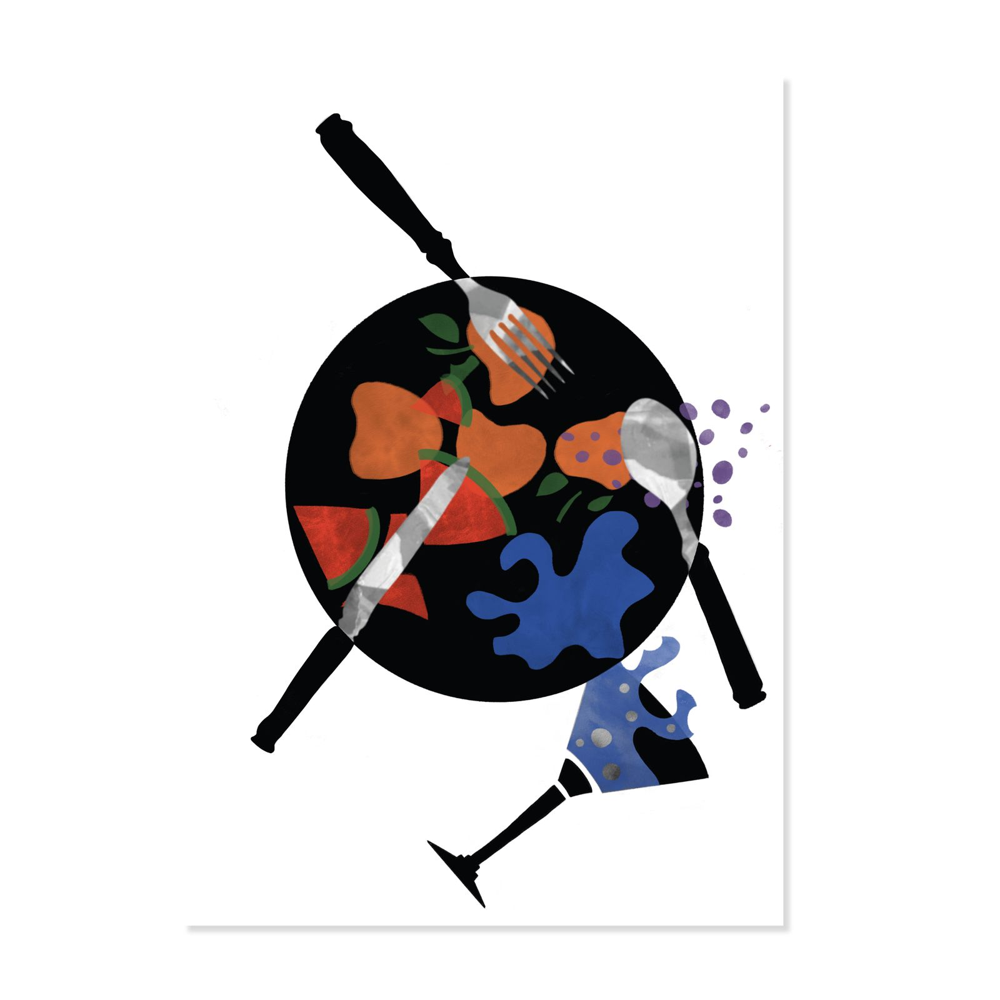
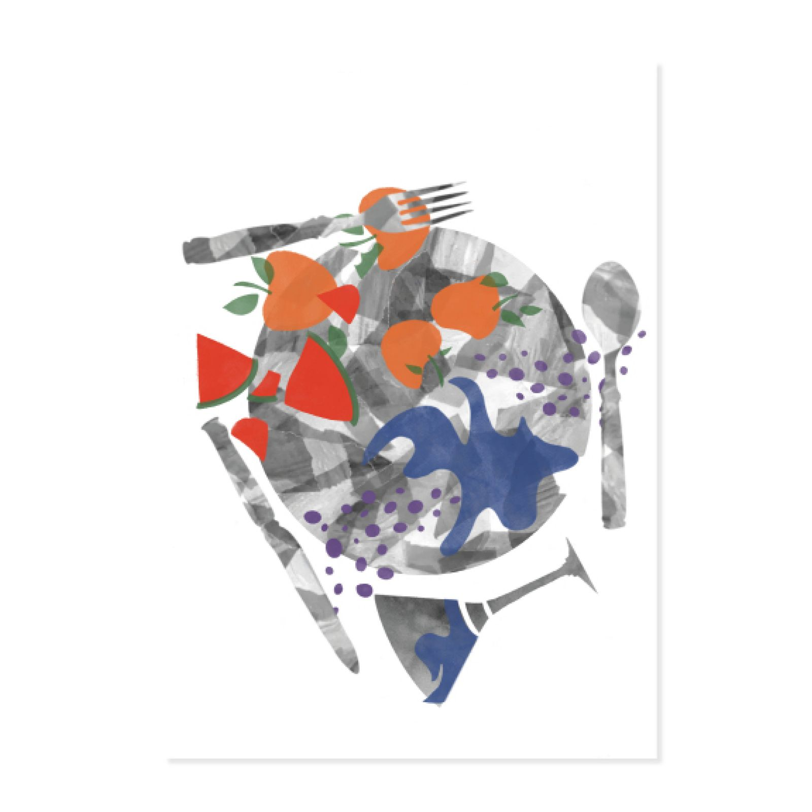
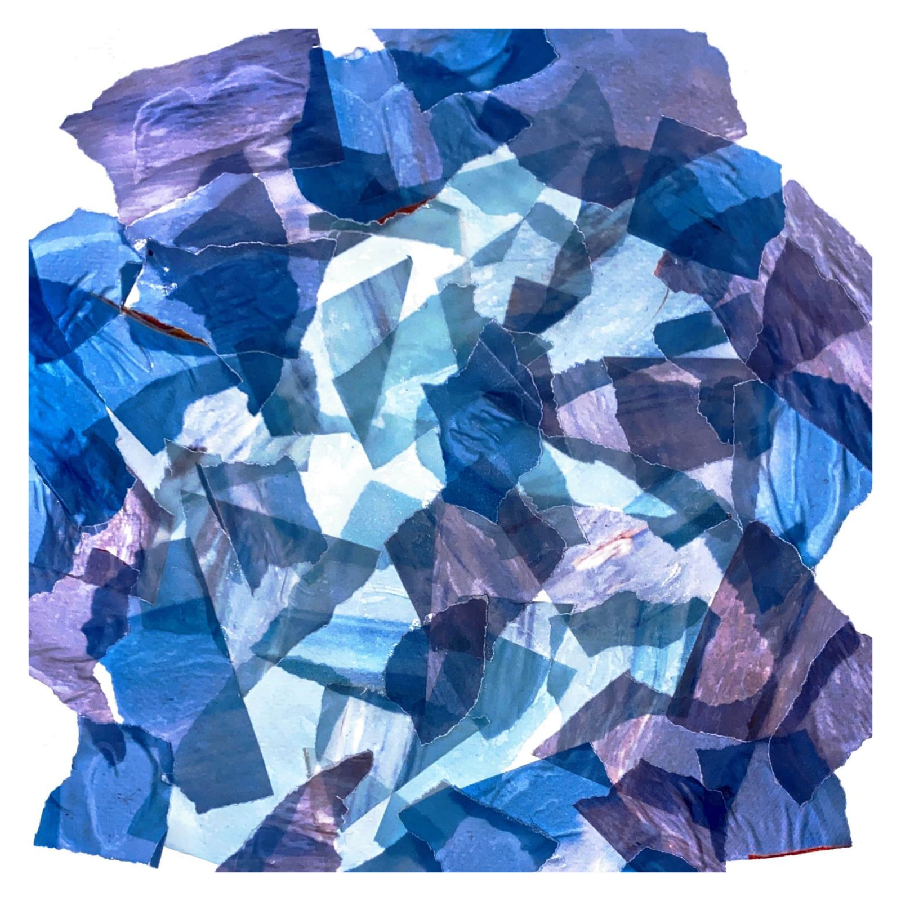
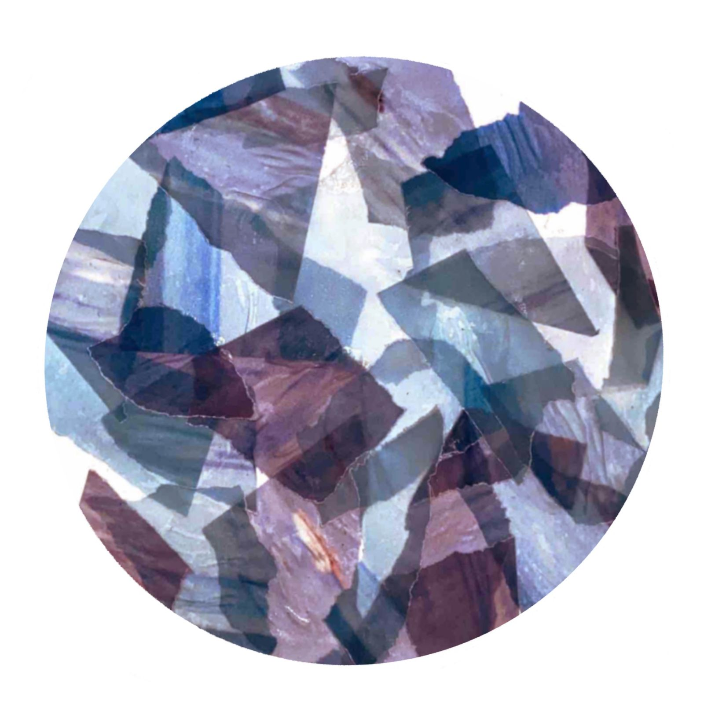

Visual for a festival poster dealing with summer gastronomy
This project is based on the theme of gastronomy. I focused here on the notion
of summer freshness. Through this summer plate, I decided to highlight the movement
and address the moments of sharing around the table with family or friends. Work produced
from cuts, shapes, assembly and illustrations. I made this project in order to make a poster
which will be displayed in public spaces, promoting possibly a gastronomy festival.